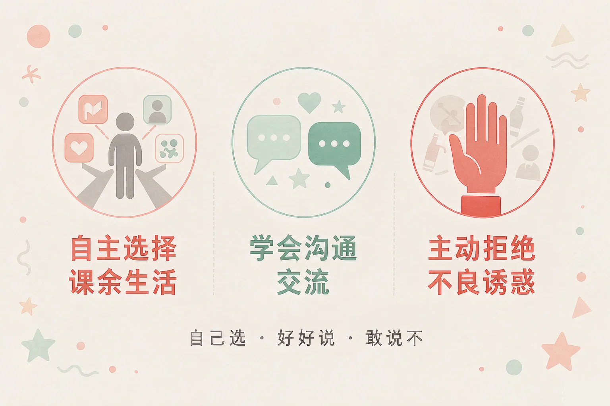
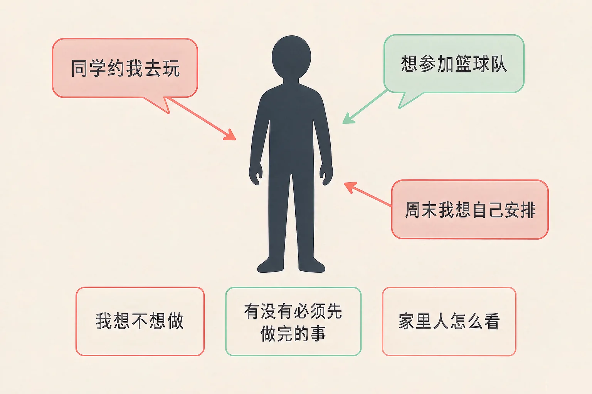
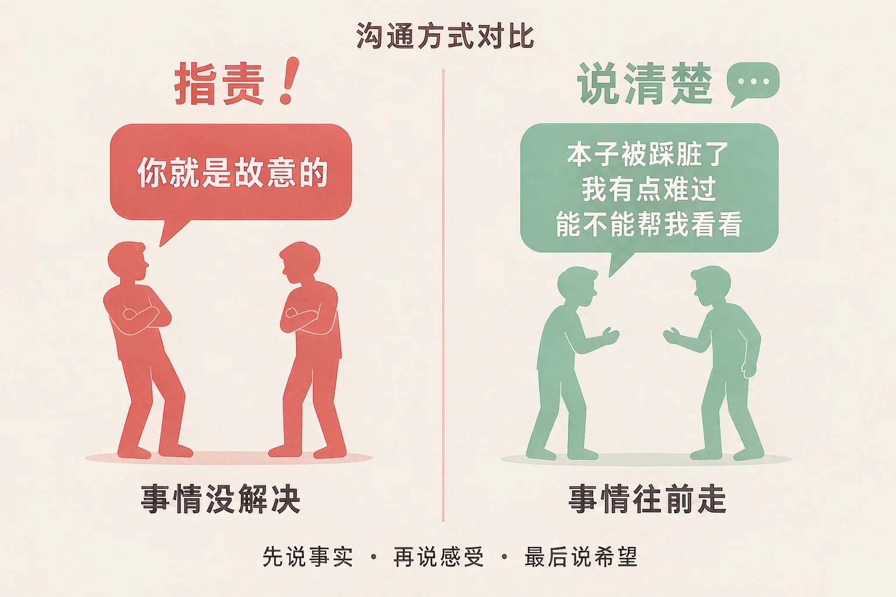

Gallery
v1.0.0 · skill v7.22.0
小学五年级 · 道德修养
长大的路上遇到拿不准的事，我该怎么选、怎么说、怎么说不？

选一个你真正想知道的问题，后面的练习都会围着它转。
选择或输入后，这节课会围绕你的问题展开。
先凭直觉选一个，选完立刻看到解释——错了也没关系，正好知道要重点听哪里。
1. 同学约你放学后去玩，可你答应过妈妈今天先把作业写完。下面哪种做法更合适？
拒绝这一件事，不等于拒绝这个人；把原因说清楚、给一个具体时间，既把自己答应的事做到，也不让对方难受。错因提醒：常见错误是误认为「不去就是不合群」——合不合群，不取决于这一件事跟不跟。
2. 同桌碰掉了你的本子，还踩脏了。下面哪种说法最能让事情往前走？
先说看到的事实，再说自己的感受，最后说希望怎么办，对方才知道发生了什么、可以做什么。错因提醒：容易把「说事实」搞混成「下判断」——一句「你就是故意的」，对方第一反应是辩解，而不是帮你。
3. 有人递给你一支烟，说就抽一口没事。下面哪种做法最稳妥？
说清楚、走开、告诉大人，这三步能让你先离开那个场合，把自己保护好。错因提醒：有的同学误认为「拒绝就是跟他吵一架」——可拒绝的目的是保护好自己，不是赢一场架。
为什么要学这一课？
我们已经知道，自己喜欢什么、不喜欢什么（And）；可到了五年级，选择变多了，同学约你、家里有安排、时间又只有那么多，常常拿不准该听谁的（But）；所以这节课先学会把三件事看清楚，再自己做选择，并且说得出理由（Therefore）。
课余生活是指上课以外可以自己安排的时间。「自己安排」不是想干什么就干什么，而是先看清三件事，再下决定。

一句可以随身带的话
先看清三件事，再自己做选择；能说出理由的选择，才算真的自己选的。
有的同学误认为「我自己决定，就不用跟家里说」。可你事先说一声，家里人不但不会拦你，还会帮你把时间安排好——自己决定和让家里人知道，从来不冲突。
🔍 深层理解 换个角度再看一遍这件事，看看能不能说出背后的原理。
看见它：同样是「不去」，一句「别烦我」和一句「明天我们一起去」，结果完全不一样。差别不在去不去，在有没有把话说清楚。
比较它：「跟着大家做」很省事，「想清楚再做」要多花一点力气，可后面要承担结果的是你自己。
迁移它：这套方法在哪里都用得上：选社团、安排周末、决定要不要买一样东西——先看清三件事，再说出自己的理由。
点开一张情境卡，从三个做法里选一个。选完会告诉你这样可能会发生什么、对方心里会怎么想，还有一个别的办法。
先点一张情境卡。
沟通交流是指把自己的想法和感受清楚地告诉对方，同时也听一听对方的想法。很多同学以为沟通就是把想说的说完，其实顺序很重要。

口诀：说事实、说感受、说希望
三步连起来，对方就知道三件事：发生了什么、你是什么心情、他可以做什么。
有的同学把「不吵架」当成「什么都不说」。可你不说，对方根本不知道你生气了，事情只会一直搁着；憋着不说，和自己生闷气没有区别。
🔍 深层理解 换个角度再看一遍这件事，看看能不能说出背后的原理。
看见它：「你就是故意的」和「本子被踩脏了」，说的是同一件事，可一句是在猜对方的心思，一句只是在讲发生了什么。
解释它：为什么先说事实最管用？因为事实是两个人能一起看见的东西，判断却只属于你一个人；从共同的地方说起，事情才谈得下去。
迁移它：和同学、和家里人、和老师，这套说法都一样：被误会的时候先讲经过，有分歧的时候先讲自己的希望。
先选一个情境，再点一种说法，看看对方心里会怎么想、事情会往哪儿走。三个情境、三种说法，一共九种结果，都可以试。
点一个情境，看看这里发生了什么。
先点一种说法。
情境：星期五放学，同学拉小北去打球，还递过来一支烟，说就抽一口没事。小北答应过妈妈，今天回家先写作业。
为什么这三步要按这个顺序
先想清楚，才知道自己要守住什么；先把原因说清楚，才不会被人当成不合群；说一句就走开，才能先离开那个地方。三步都做完，你既保护了自己，也没有把关系弄僵。
有的同学误认为「拒绝就是跟对方吵一架」，觉得当场翻脸才算出气。可拒绝的目的是保护好自己，不是赢一场架；说清楚、走开、告诉大人，比自己站在那儿硬扛更管用。还有一个误认为：怕被说胆小，就把烟接过来——真正需要勇气的其实是说「不」。
先凭直觉选一个，选完立刻看到解释——错了也没关系，正好知道要重点听哪里。
1. 关于课余生活的安排，下面哪句话说得对？
自己选择不等于随便选，也不等于瞒着家里；能把理由说出来，才算真的自己选。错因提醒：常见错误是误认为「不去就不合群」——合不合群看的是有没有把话说清楚、答应的事有没有做到。
2. 被同学误会了，下面哪种说法最能让事情往前走？
先把事实说清楚，再问一问对方的想法，误会才有机会澄清。错因提醒：有的同学把「不吵架」搞混成「什么都不说」——可传言没人澄清，只会越传越远，你心里也一直堵着。
3. 有人递烟给你，下面哪句话说得对？
拒绝的落点在「保护自己」：说清楚、走开、告诉大人，这三步都能做到。错因提醒：容易把「出一口气」误认为「解决了事情」——骂完还站在原地，等于把自己留在了那个场合里。
下面这件事连着发生，分三步。每一步选一个做法，我会把你的选择拼成一条完整的应对。
情境：星期五放学，同学拉着你去打球，可你已经答应妈妈回家先把作业写完。这时一个高年级的同学递过来一支烟，说：就抽一口，没事的。
从第一步开始选。
把它写下来，说给同桌听：
今天这节课里，哪一句话是你最想记住、也最想说出口的？写下来，再对着同桌说一遍。
先凭直觉选一个，选完立刻看到解释——错了也没关系，正好知道要重点听哪里。
1. 有同学给你起了个外号，你很不喜欢。下面哪种做法更好？
先说自己的感受，再说希望对方怎么办——这一步说清楚了，他才有机会改。错因提醒：常见错误是误认为「回敬一句才不算吃亏」——互相起外号只会越闹越大，你想要的是他别再叫，不是比谁更伤人。
2. 你想跟家里人商量，周末留半天自己安排。下面哪种说法更好？
先说自己的希望，再说自己打算怎么做，家里人更容易同意，也更放心。错因提醒：有的同学把「说出来」搞混成「吵出来」——一开口就指责，本来能商量的事也容易变成互相生气。
3. 同学说楼梯间有人递烟，还叫你一起去看看。下面哪种做法更好？
先离开那个场合、再把这件事交给大人，比自己冲上去更安全，也更管用。错因提醒：容易把「有勇气」误认为「一个人去挡」——保护好自己、把事告诉大人，同样需要勇气。
一句口诀：自己选、好好说、敢说不。拒绝是为了保护好自己，不是为了赢一场架。
给别人讲一遍：请从这节课的三件事里挑一件，讲给家里人听，并说清楚你打算从哪一次开始试一试。
再动一动手：写一写你最近遇到的一件拿不准的事，把「我先想清楚了什么、我打算怎么说」写下来。
三层练习，做完第一、二层就算通关；第三层留给愿意继续探索的同学。
⭐ 基础巩固（必做）
⭐⭐ 能力应用（必做）
⭐⭐⭐ 迁移挑战（选做）
左边是学它之前要先会的，右边是学会之后可以继续探索的，下面是同一领域的伙伴知识。
图谱正在加载：首次进入需下载知识索引（约 1–3 秒），加载完成后本行会自动消失。